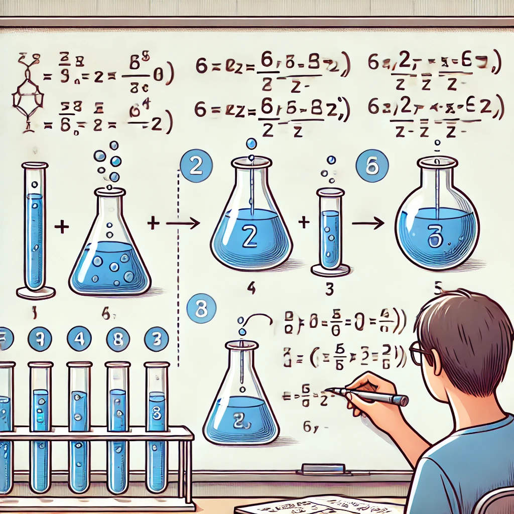

Разобранные примеры помогут вам лучше понять методику решения.
Задача: Сколько граммов соли нужно добавить к 400 г 20%-ного раствора, чтобы получить 25%-ный раствор?
Решение:
Обозначим массу добавляемой соли через x. Масса соли в исходном растворе: 400 * 0.2 = 80 г. После добавления соли масса раствора станет (400 + x), а масса соли (80 + x). Составим уравнение:
(80 + x) / (400 + x) = 0.25
Решаем: 80 + x = 0.25(400 + x) → 80 + x = 100 + 0.25x → 0.75x = 20 → x = 26.67 г.
Задача: В 600 г 15%-ного раствора добавили 200 г 30%-ного раствора. Найдите массовую долю вещества.
Решение:
Масса вещества в первом растворе: 600 * 0.15 = 90 г.
Масса вещества во втором растворе: 200 * 0.30 = 60 г.
Общая масса раствора: 600 + 200 = 800 г.
Общая масса вещества: 90 + 60 = 150 г.
Массовая доля вещества: 150 / 800 = 0.1875 = 18.75%.
Задача: К 500 г 10%-ного раствора добавили 100 г чистого вещества. Какова массовая доля вещества в новом растворе?
Решение:
Масса вещества в исходном растворе: 500 * 0.1 = 50 г.
После добавления 100 г вещества общая масса раствора: 500 + 100 = 600 г.
Общая масса вещества: 50 + 100 = 150 г.
Массовая доля вещества: 150 / 600 = 0.25 = 25%.
Задача: Смешали 300 г 12%-ного раствора и 700 г 8%-ного раствора. Найдите массовую долю вещества.
Решение:
Масса вещества в первом растворе: 300 * 0.12 = 36 г.
Масса вещества во втором растворе: 700 * 0.08 = 56 г.
Общая масса раствора: 300 + 700 = 1000 г.
Общая масса вещества: 36 + 56 = 92 г.
Массовая доля вещества: 92 / 1000 = 9.2%.
Задача: В 1 кг 5%-ного раствора выпарили 200 г воды. Какова новая массовая доля вещества?
Решение:
Масса вещества в исходном растворе: 1000 * 0.05 = 50 г.
После выпаривания воды масса раствора: 1000 - 200 = 800 г.
Массовая доля вещества: 50 / 800 = 0.0625 = 6.25%.